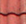

Plovárna
Semestrální práce do předmětu Y36MVR, zimní semestr 2009, cvičení pátek 9:15, tým 3
Technická specifikace - Tobogán
Autor: Daniel Kavan
Popis řešení
Model obsahuje 4 úrovně detailů.
- < 40 m
- Při vzdálenosti do 40m se zobrazuje model nejvyšší kvality s texturami.
- 40 - 70 m
- Model zjednodušen:
- Textury jsou nahrazeny barvami.
- Uzel Extrusion, ktery tvori skluzavku je vymodelovan jen 4 bodovou základnou provedenou po původní trajektorii a bez zahlazení.
- Věž místo IndexFaceSetu tvoří jen kvádr
- 70 - 120 m
- Nejniží kvalita modelu, kde je ještě model viditelný
- Extrusion ze skluzavky je nahrazen 2 rozměrným tvarem na Billboardu.
- Věž jen kvádr
- > 120 m
- Model je nahrazen prázdným uzlem Group {}.
Parametry prototypu
PROTO TOBOGAN [ exposedField SFColor barvatela .5 .5 .5 # barva tela skluzavky (RGB) exposedField SFInt32 useLOD 1 # 1 = zapnout LOD, 0 = bez LODu exposedField MFString frontTexture "models/kavanda1-tobogan/sipka.png" # textura na predni stranu ]
Geometrie
Dle úrovně detailů počítá model (od nejdetailnějšího k nejméně detailnímu):
- 698 trojúhelníků
- 331 trojúhelníků
- 29 trojúhelníků
- 0 trojúhelníků
Textury
| Jméno textury | Náhled | Velikost | Rozměry | Poznámka |
|---|---|---|---|---|
| Střecha |  | 4 kB | 24 x 26 (624 px) | Textura na střechu pro vytvoření dojmu tašek. |
| Šipka |  |
15 kB | 600 x 200 (120 kpx) | Dekorace vnější stěny se symbolem šipky. |
| Šipka2 |  |
14 kB | 600 x 200 (120 kpx) | Alternativní dekorace vnější stěny se symbolem šipky. |
Zvuky
- 2. fáze projektu zvuky neobsahuje